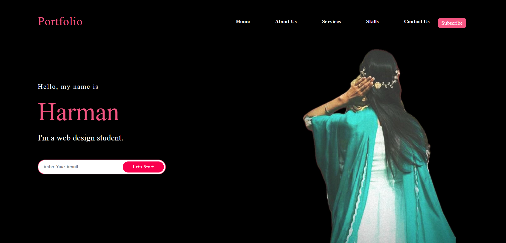
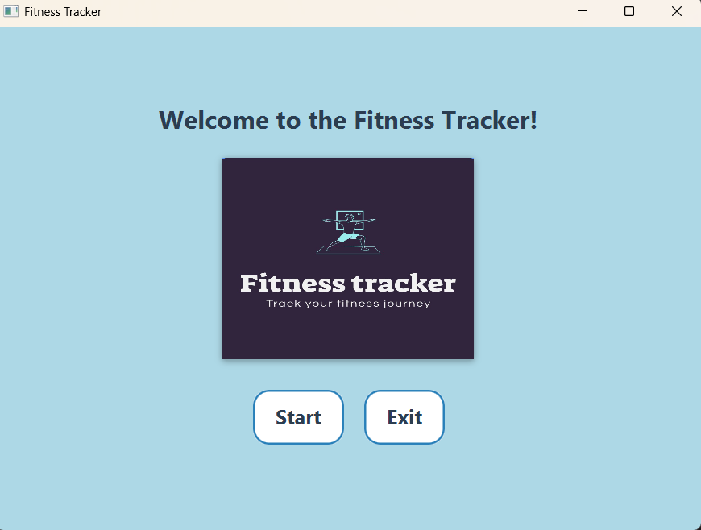
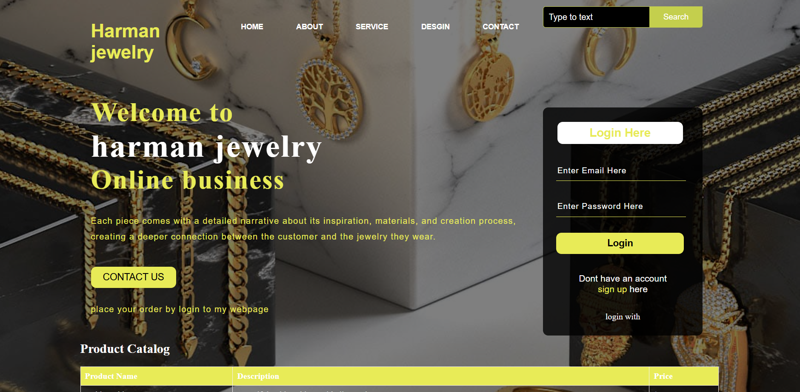

Latest Projects

Personal Portfolio Site
A personal portfolio created with HTML, CSS, and JavaScript. Features include a responsive design, showcasing my work and skills.

Fitness Tracking Software
A fitness tracking app that helps users monitor their health goals and progress with an easy-to-use interface and this is group project in java programming 3.

github account
On github i uploaded all my assignment which i did in whole semester like javascript, java programming projects.
Visit My GitHub

Personal Business Site
This project i did in one first semester in html and css course. so this is the my first website which i made.